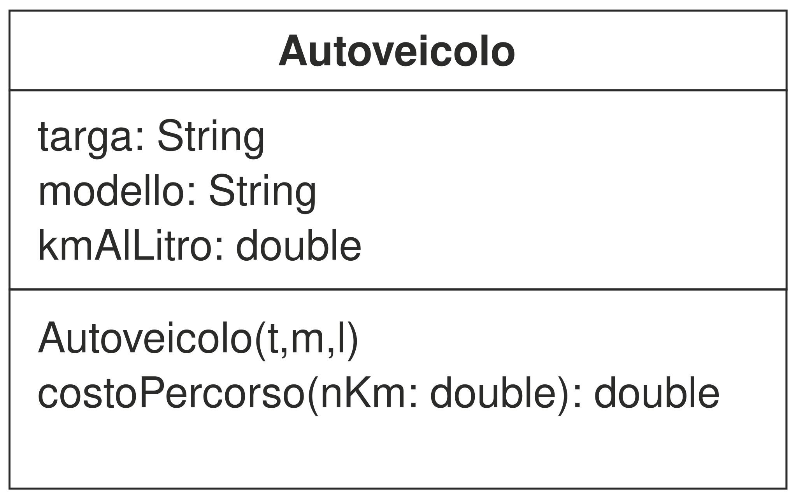

Prima una precisazione: UML ( Unified Modeling Language) è un linguaggio per modellare molte cose diverse, qui ci occupiamo soltanto della modellazione delle classi.

Quello riportato a destra è diagramma che rappresenta una classe: nel primo blocco dall'alto ne viene riportato il nome, in grassetto, nel secondo le proprietà e nel terzo i metodi.Ogni nome di proprietà (o di un parametro di un metodo) può essere seguito da un "due punti" e dal nome del tipo, nel caso dei metodi il ": tipo" in fondo a destra rappresenta il tipo ritornato.
Il diagramma della classe rappresentato non riporta una caratteristica: la visibilità delle proprietà e dei metodi elencati. I diversi tipi di visibilità si possono facilmente rappresentare mettendo un simbolo prima del nome:
- +
- public
- ~
- package (quella che si ottiene non mettendo nulla in java)
- #
- protected
- -
- private
In UML si possono rapprentare molti altri fatti tra cui:
- Per disegnare una inerfaccia si procede come per una classe ma scrivendo "interfaccia" prima del nome della class
- se la classe B estende dalla classe A si traccia una freccia continua che dalla classe B va verso la classe A
- se la classe B implementa l'interfaccia A si traccia una freccia tratteggiata che dalla classe B va verso la classe A confermare